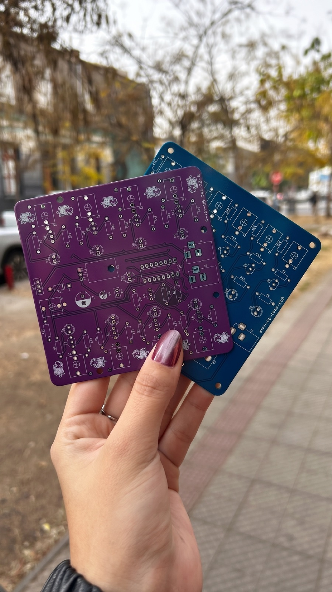

SEQ-01 y SEQ-02
2026
- diseño industrial
- electrónica

Conjunto de placas PCB desarrolladas para funcionar como un secuenciador rítmico modular. A partir de una señal de reloj (NE555), el sistema distribuye pulsos eléctricos mediante dos circuitos complementarios: un contador binario y un registro de desplazamiento, logrando patrones repetitivos y escalonados para activar módulos de sonido.
Autores: Álvarez, Pañitrur, Ramírez, Sabogal, Catrileo